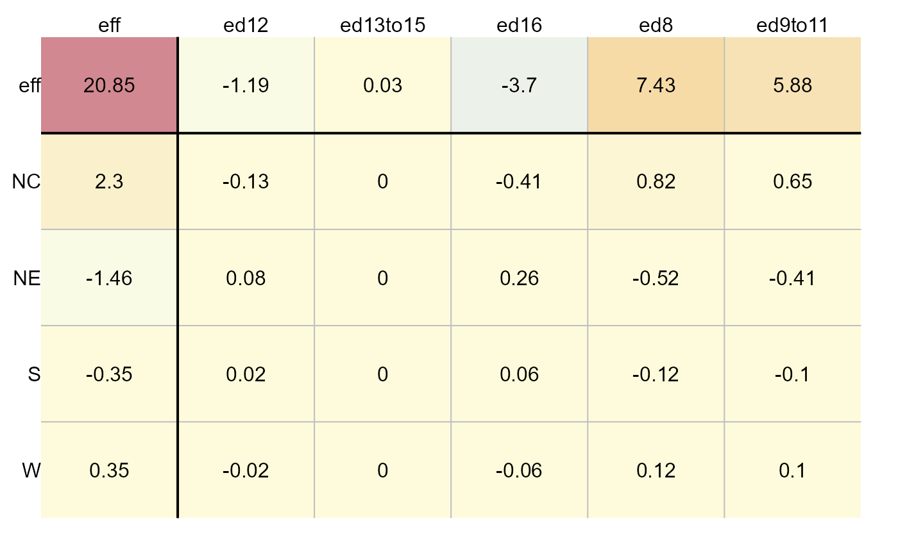
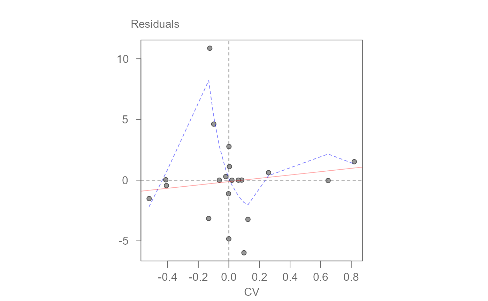

eda_pol A plot method for lists of eda_polish class.
# S3 method for eda_polish
plot(
x,
type = "residuals",
k = 1,
col.quant = FALSE,
colpal = "RdYlBu",
adj.mar = FALSE,
res.size = 1,
row.size = 1,
col.size = 1,
res.txt = TRUE,
label.txt = TRUE,
...
)A list of class eda_polish
Plot type. One of three: "residuals", "cv" or "diagnostic".
If cv values are to be plotted, define the k parameter
Boolean determining if a quantile classification scheme should be used
Color palette to adopt
Boolean determining if margin width needs to accomodate labels
Size of residual values in plot [0-1]
Size of row effect values in plot [0-1]
Size of column effect values in plot [0-1]
Boolean determining if values should be added to plot
Boolean determining if margin and column labels should be plotted
Arguments to be passed to subsequent methods
The function plots a polish table of residuals or CV values. I will also generate
a diagnostic plot if type is set to diagnostic
# Create dataset
df <- data.frame(region = rep( c("NE", "NC", "S", "W"), each = 5),
edu = rep( c("ed8", "ed9to11", "ed12", "ed13to15", "ed16"), 4),
perc = c(25.3, 25.3, 18.2, 18.3, 16.3, 32.1, 29, 18.8,
24.3, 19, 38.8, 31, 19.3, 15.7, 16.8, 25.4, 21.1, 20.3, 24, 17.5))
# Generate median polish output
out <- eda_pol(df, row = "region", col = "edu", plot = FALSE)
# Plot table
plot(out, type = "residuals")
# Plot table using CV values
plot(out, type = "cv")

# Generate diagnostic plot
plot(out, type = "diagnostic")

#> $slope
#> cv
#> 1.066624
#>